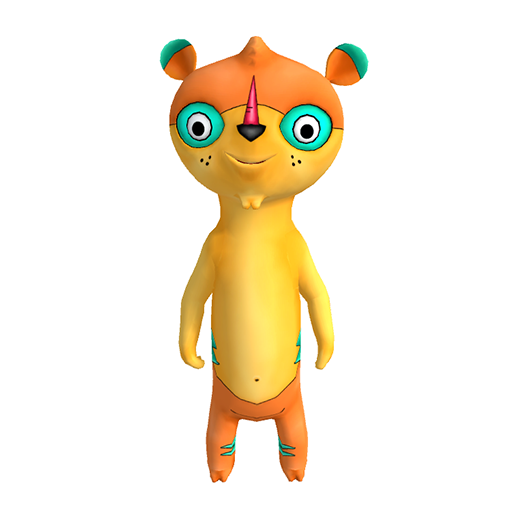
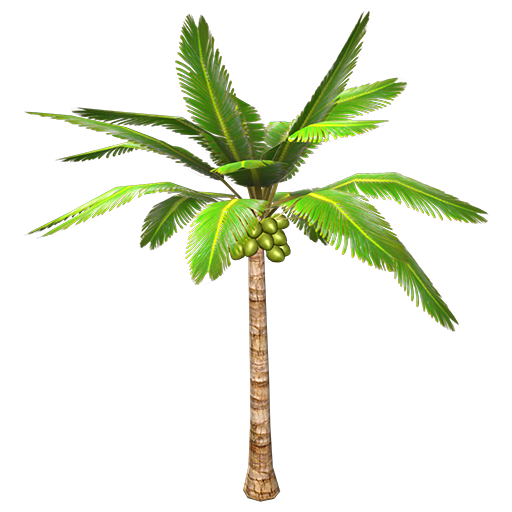
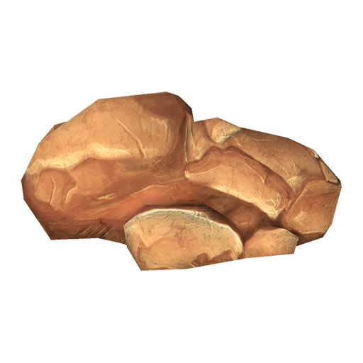
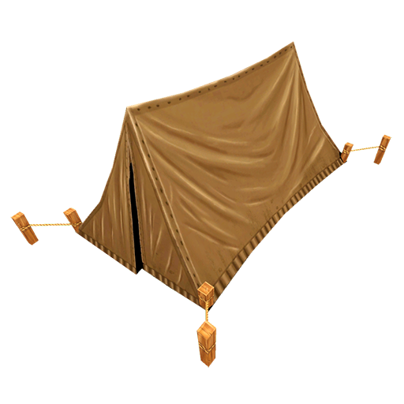

Hi! I'm glad you arrived.
You're invited to design your own ISLAND! You can use craft projects, Science knowledge, and your own Big Ideas. PLUS stuff from the magical Island Building Menu in the app. When you create an Extra Cool Island, Snap a picture or take a video! I'm. Manu, by the way, your humble meerkat friend. Let's Go!
Palm Tree
These tree's trunks have rings where palm fronds used to be.
Rock
Some islands have volcanic rock, others have rocks made of sand.
Tent
Tents keep ypu dry in rain.
